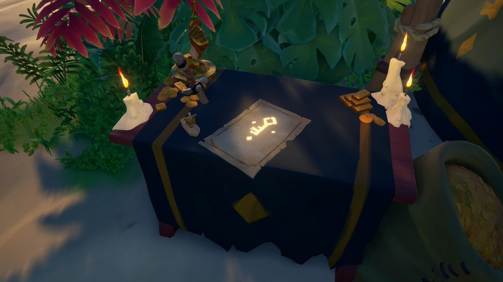

Companies, quests, world events, fights, emissaries, and map reading — a beginner chart you can jump through by topic.
Hover (or tap) any item card or for a bigger picture
The golden rule: treasure is worthless until you sell it. A chest on your deck is just wood and risk — it only becomes gold and reputation when you hand it to a trading company. Anyone can steal it until that moment, and if you log out, it's gone. Sell early, sell often.
The loop
How a voyage becomes gold
01Take a voyage
Vote on a voyage at your ship's map table — bought from a company, or from your quest radial.
02Find the treasure
Dig chests, defeat skeleton captains, catch fish, haul cargo. Carry loot back to the ship (you can't fight while holding it).
03Sail to an outpost
Outposts are the islands with docks, shops and taverns — marked with a ship icon on your map table.
04Sell to the right buyer
Each company has its own rep at the outpost. Hand them their kind of loot for gold and reputation.
The buyers
The trading companies
Listed in the order most new pirates should meet them. Loot in each card is sorted cheapest → priciest.
Each company grid lists the main sellables sorted low → high. Prices are approximate base gold from the wiki (exact rolls vary; ranges cover common variants). Grade 5 emissary pays up to 2.5× more. Exception: Reaper’s Chest pays ~20 doubloons (not gold). Raid rewards are exclusive loot from company Raid Voyages (dive to an Ashen Lord / Skeleton Fort / Skeleton Fleet / Burning Blade) — usually ~5,000 g, ~10,000 g, or ~15,000 g by difficulty.
seaofthieves.wiki.gg
Start here
Gold Hoarders
Where: a big tent at every outpost, run by a gold-toothed hoarder with a hand of solid gold.
The classic pirate fantasy: they sell voyages with X-marks-the-spot maps, riddles, and vault keys, and they buy back anything shiny you dig up. The simplest loop in the game — map, island, chest, outpost — which is why it's the best first company.
Loot they buy · low → high · wiki base prices
Deckhand's tip
Got a aboard? It weeps sea-water on a timer. Park it on the top deck and keep a bucket handy, or it will quietly sink you from the inside.
seaofthieves.wiki.gg
Combat voyages
Order of Souls
Where: the dark, candle-lit shop at every outpost, run by a mystic hunched over a glowing skull.
Mystics who read the memories of the dead. Their bounty voyages send you to hunt named skeleton captains and their crews; bring back the glowing skulls they drop. Skulls also rain out of skeleton forts, ghost fleets and ashen lords — all of it sells here.
Loot they buy · low → high · wiki base prices
Deckhand's tip
Skeleton types matter: shadow skeletons only take damage in light (raise your lantern), plant skeletons hate your sword less than your bucket of water, and gold skeletons rust and slow down when wet.
seaofthieves.wiki.gg
Honest work
Merchant Alliance
Where: the clerk standing right on the dock of every outpost, next to the shipping crates.
The "honest trader" company. Their voyages are deliveries: ferry cargo before the deadline (a mint-condition cargo crate pays 700 g), catch and cage live animals, or recover lost shipments from the seabed. They also buy commodity crates found (or stolen) around the world, and — handle those gently.
Loot they buy · low → high · wiki base prices
Deckhand's tip
Animals drown. Keep cages on the top deck, feed the pigs, and pull out an instrument near snakes — music calms them so they stop spitting venom at you.
seaofthieves.wiki.gg
Fishing & cooking
The Hunter's Call
Where:not at outposts — find them at the small (lone shacks on stilts) scattered across the map.
Merrick's family of hunters buys what you catch and cook: every species of fish, plus meat from sharks, snakes, pigs, chickens, krakens and megalodons. Cooking roughly 1.5× a fish's price, and trophy (oversized) fish are worth 2.5× their normal kin — so a cooked trophy of a rare colour is serious money.
Loot they buy · low → high · wiki base prices
Deckhand's tip
Watch the fish on the pan: when the eyes go white and it just starts to darken, pull it. Undercooked pays less, charcoal pays almost nothing. Rare fish need the right bait — earthworms, leeches or grubs from barrels.
seaofthieves.wiki.gg
High risk · PvP
Reaper's Bones
Where: one place only — The Reaper's Hideout, a lone island near the centre of the map (grid I-12).
The menacing masked cult of piracy itself. The Servant of the Flame matches any other company's price, so almost every kind of loot — including treasure you stole from other crews, and their torn-down emissary flags — can be sold here in one pile. The catch: everyone knows where reapers sell, so the hideout is the most dangerous dock on the sea.
Loot they buy · low → high · wiki base prices
Deckhand's tip
See a ship flying a ? They can see you on their map table, and they're usually hunting players, not skeletons. As a new pirate, sail the other way.
seaofthieves.wiki.gg
Endgame
Athena's Fortune
Where: the Mysterious Stranger inside every outpost ; the ghostly hideout itself opens only for Pirate Legends.
The Pirate Lord's own company. (The tavern, if you're brand new, is the pub building at every outpost — it's where you first spawn, where you buy grog, and where the Mysterious Stranger leans in the corner.) Reach rank 50 with any three companies to become a Pirate Legend, unlock the hidden hideout under the tavern, and take on legendary voyages for glowing green Athena treasure. Found Athena loot before you're a legend — say, off a sinking legend's ship? The Stranger will still buy it.
Loot they buy · low → high · wiki base prices
Deckhand's tip
Don't grind for legend status — it arrives on its own. Pick whichever company's voyages you actually enjoy; rank 50 in three of them is a long, happy road, not a checklist.
seaofthieves.wiki.gg
Quality of life
The Sovereigns
Where: the tall hut with a cargo lift on the second dock of every outpost.
Not really a company — more like valets for pirates who own a captained ship (buy one with gold from the Pirate Menu; a sloop costs 250,000 g). Harpoon your loot onto their lift and they sell it to the right companies for you, fish included. Same gold, same reputation, none of the walking. They won't take cargo-run deliveries, Reaper loot or contraband.
Deckhand's tip
Once you can afford a ship, buy it. Selling in one spot instead of three saves whole minutes at every outpost — minutes another crew could use to rob you.
seaofthieves.wiki.gg
New · 2025
Smugglers' League
Where: hidden Smugglers' Hideouts tucked into eight large islands (Smugglers' Bay, Plunder Valley, Crook's Hollow…) — not at outposts.
The newest faction, added late 2025. What's contraband? A separate family of black-market loot — black powder barrels, smuggler rum, stolen paintings, incriminating ship logs — found on smuggling runs, in buried smugglers' caches, and during heist events. No other company will buy it, not even the Reapers; only League reps like Sea-Cloak Solomon pay for it, in pure gold (no reputation ranks, no emissary flags).
Contraband they buy · low → high · wiki base prices
Deckhand's tip
Contraband only sells at hideouts, so learn where your nearest one is before you load a deck full of hot goods.
Gold Hoarders & friends
Quest & voyage guide
Sorted easy → hard. Hover any for a real game picture. Gold is base (no emissary).
Hunter's Call fishing / cooking
~50–1,400 g per catchDifficulty · Easy
What to do: Cast a with the right bait, cook meat on the stove, sell at a Hunter's Call rep.
Tips Trophy / rare fish pay far more. Check the in-game fishing guide for bait and waters.
Buried treasure (X marks the spot)
~300–2,500 gDifficulty · EasyBest first voyage
What to do: Open the quest map, match the island on your , sail there, dig every red X with your . Sell chests at the Gold Hoarders tent.
Tips Rotate the parchment until coastlines match. Stack loot on the beach, then harpoon aboard.
Merchant cargo / animals
~200–2,000 gDifficulty · EasyTimers
What to do: Pick up or animal cages from the Merchant, deliver before the deadline. Damaged cargo pays less.
Tips Feed animals. In storms, stow cargo below. Leave early — timers are real.
Riddle map
~400–1,800 gDifficulty · Medium
What to do: On a large island, follow each riddle line to a landmark. Raise your , play an instrument, or dig as asked. Last line leads to a with gold and artefacts.
Tips Walk with the riddle open. Face the stated direction before counting paces.
Order of Souls bounty
~500–3,500 gDifficulty · MediumCombat
What to do: Clear skeleton waves, defeat the captain, grab the glowing , sell to the Order of Souls mystic.
Tips Kill gunners first. hate water and ; plant skeletons hate fire.
What to do: Follow the — dig where the needle spins. Assemble the torn map, dig the . Sell it, or open the timed vault and loot (incl. Chest of Ancient Tributes).
Tips Skeletons spawn on parchment digs. Quiet server → run the vault; Reapers nearby → sell the key.
Diving to Voyages & Tall Tales
Fast travelChanges server
Before you dive: sell ordinary treasure first. Diving moves your ship to another server near the Voyage or Tall Tale start, destroys normal treasure aboard, and starts an 8-minute dive cooldown. Resource crates stay.
Skull of Siren Song respawns
Contested questSituational respawn
What joining changes: your ship receives a closer respawn only when it sinks near a Siren Song objective or quest item. Joining is not a general close-respawn switch elsewhere on the server.
Read the sky
Current world events
Only one rotating world event is normally active per server. Follow its cloud or beacon, complete the fight, then sell the loot. Times assume a prepared sloop crew; solo and contested runs take longer.
Season 20
Current as of July 2026: emergent events now give the best version of their haul. Every event below has a chance to add 1 Chest of Fortune (20,000 g), or rarely 3 (60,000 g). On-demand World Event Raid Voyages are temporarily disabled during Season 20.
Look for thisAt the fort
Skeleton Fort
Sky marker · gray skull with flashing green eyes
Base haul~25,000–45,000 gTime~15–25 minRiskMedium
What to do: Land at the fort, clear roughly 12 skeleton waves, defeat the final Skeleton Lord, take its Stronghold Key and unlock the vault.
Beginner tip: Use the fort’s gunpowder against groups. Scan the horizon between waves.
Look for thisAt the fort
Fort of Fortune
Sky marker · cracked red skull and a deep horn
Base haul~120,000–140,000 gTime~30–50 minRiskVery high
What to do: Survive 18 waves: captains, 3 Skeleton Lords, then an Ashen Lord. Use the red key to open a vault packed with Athena and Stronghold treasure.
Watch out: The key appears on every crew’s map. Expect players to arrive near the final waves.
Look for thisAt the fort
Reaper Fortress
Sky marker · dark skull wearing a hat, glowing red eyes
Base haul~70,000–120,000 gTime~30–45 minRiskVery high
What to do: Fight 15 mixed waves of Bone and Blade skeletons, phantoms and attacking ghost ships. Kill the Master of Arms for the weapon cache, then defeat the Lord and open the vault.
Beginner tip: Fort fire traps recharge every 60 seconds. The vault includes Reaper and Smugglers’ League loot.
Look for thisOn the water
Skeleton Fleet
Sky marker · green-gray ship cloud with lightning
Base haul~25,000–60,000 gTime~20–35 minRiskHigh
What to do: Sail under the cloud near K-11 and sink 3 waves of 1–2 skeleton ships. The captain’s ship in the last wave drops the largest pile.
Beginner tip: Skeletons repair but never bucket water. Keep making lower-deck holes and collect each ship’s loot before it drifts away.
Look for thisOn the water
Ghost Fleet
Sky marker · thin green ghostly tornado over a large island
Base haul~20,000–45,000 gTime~20–35 minRiskHigh
What to do: Circle the island and destroy 4 waves of ghost ships. Grunts take 3 cannon hits; captain ships drop ghostly treasure and the final Burning Blade drops the main haul.
Beginner tip: Sail across their path and fire through them. Do not chase directly behind a ghost ship.
Look for thisFight one of these
Ashen Winds
Sky marker · tall fiery-red tornado
Base haul~25,000–45,000 gTime~10–20 minRiskMedium
What to do: Fight one Ashen Lord through 3 phases on a large island. Dodge fire, boulders and shockwaves; the defeat erupts roughly 15 Ashen treasures from the ground.
Best prize: The full-charge Ashen Winds Skull sells for 10,000 g—or works as a flamethrower.
Look for thisOn the water
Burning Blade
Sky marker · red-orange beacon above a huge warship
Reward14,000 g or 26,000/ritualTime~20–90+ minRiskExtreme
What to do: Defeat the AI-controlled warship, then either sink it for its Blade of Souls and onboard treasure, or pledge to Flameheart, command it, complete Skeleton Camp rituals and return it to Reaper’s Hideout.
Important: Returning the ship does not sell treasure aboard it. Unload first. Every ritual makes you a more valuable target visible on map tables.
Not in the random rotation: Fort of the Damned is a player-started raid, while Krakens, Megalodons and roaming Skeleton Ships are encounters. A Kraken can appear in the gap after a rotating world event ends.
Gold figures are approximate High Seas base totals before emissary bonuses, contested losses or the Season 20 Chest of Fortune roll. Images and event mechanics: Sea of Thieves Wiki (wiki.gg) and official Sea of Thieves media.
Steel and powder
Fight tips — weapons vs enemies
Default loadout: + (or ). Real photos of each enemy and the tool that beats them.
EnemyBest tool
Regular skeletons
2–3 sword hits or a shot. Kill snipers first; keep moving.
EnemyBest tool
Gold skeletons
Sword barely scratches metal. Splash with a , then shoot — or burn with .
EnemyBest tool
Plant / green skeletons
strips their regen. Finish with .
EnemyBest tool
Shadow skeletons
Raise your to make them solid, then hit. In the dark they shrug off damage.
EnemyBest tool
Skeleton captains
Same type rules as their crew. Eat mid-fight; drop loot before swinging.
EnemyBest tool
Phantoms
Melee shreds them. A deletes close packs.
EnemyBest tool
Ocean crawlers
Kill Eel-ectrics first. Keep range with / ; avoid Hermit poison.
EnemyBest tool
Other pirates (PvP)
for ladders; for decks; for movement. Carry .
Best all-round loadouts
Islands / PvE: +
Ship fights: +
Boarding: +
Habits that keep you alive
Reload at ammo crates. Eat cooked food. Block with sword. Never dig while holding loot — drop it, fight, pick up.
Stay alive and control the deck
Winning a ship fight is mostly movement, food, repairs, and hearing the boarder before they reach the ladder.
Heal before the next shot
Dodge incoming fire, break line of sight, then eat. Keep strong food in your pockets and do not wait for the screen to turn fully red.
Douse yourself with the bucket
Fill your bucket, then use its secondary action to pour water over yourself. A firebomb's secondary action only offers it to another pirate.
Listen for the ladder splash
A swimmer grabbing your ladder makes a clear splash. Check both ladders, then use a blunderbuss or blunderbomb to knock the boarder away.
Raise sails to tighten the turn
Partly raise sails during a close fight. Your ship slows and turns more tightly, which keeps your cannons aimed without dropping anchor.
Fire adds pressure, not a quick sink
Fire forces a crew away from cannons and repairs, but one patch takes several minutes to make holes. A keg blast is what can open 4 hull holes at once.
Keep their ship in your cannon arc
Steer so your cannon side faces the enemy while their bow or stern faces you. Fixed deck landmarks vary by ship cosmetic, so watch the cannon itself.
Save tridents for PvE
Tridents deal about 2.5× damage to creatures. Charge a large bubble for groups and bosses. Light Shadow Skeletons first.
Shoot keg skeletons in the legs
Do not swing a cutlass at the barrel. Back away and shoot the skeleton's legs, back, or head if you want the keg to survive.
Use the Horn for control
The Horn of Fair Winds can fill sails, push pirates off deck, propel swimmers, soften a fall, and extinguish fire. Its charge is limited.
Trap boarding routes
Place a trap near the top of a ladder or stair route, then crouch to load a blunderbomb. It slows and knocks back, but no longer kills a full-health pirate alone.
High Seas · risk for reward
Emissaries: build the flag before you sell
Buy a company's once, then vote at its table whenever you start a High Seas session. Company work raises the flag from Grade I to V. A taller flag pays more, but tells other crews you probably have loot.

Count the ships before you raise a flag
Each small wooden ship on a company's Emissary Table represents 1 active crew for that company on the server. Check the tables before choosing your route.
Grade I1×Base reward
Grade II1.33×+33%
Grade III1.67×+67%
Grade IV2×+100%
Grade V2.5×+150%
These standard multipliers apply to Gold Hoarders, Order of Souls, Merchant Alliance, Hunter's Call, Athena's Fortune, and Reaper's Bones. Guild flags use smaller bonuses: 1×, 1.15×, 1.30×, 1.45×, and 1.75×.
The useful habit: raise first, collect company loot, complete company tasks, then sell at Grade IV or V. Selling ordinary treasure usually does not raise the grade. Before lowering a Grade V flag, claim its Emissary Quest from the company representative.
Gold Hoarders
Rank 15 · Raise beside the green-and-gold tent
Build grade: complete treasure maps, riddles, and vault steps; pick up Gold Hoarder chests and artefacts for the first time.
Beginner route: run 1 vault or several short digs, keep the haul aboard, then sell together once the flag reaches IV or V.
Grade V: claim 4 treasure maps loaded with high-value chests.
Order of Souls
Rank 15 · Raise beside the purple mystic's tent
Build grade: finish bounty maps, defeat captains, and collect bounty skulls. Fort captain waves also help.
Beginner route: chain nearby bounties so you spend less time sailing with skulls exposed on deck.
Grade V: claim 4 bounty maps with valuable skull targets.
Merchant Alliance
Rank 15 · Raise beside the dockside merchant
Build grade: progress deliveries and Lost Shipment voyages; collect and load cargo, animals, commodities, and resource crates.
Beginner route: Lost Shipments build grade quickly and end with a large manifest haul. Protect plants from drying and rum from impacts.
Grade V: claim 2 cargo maps with 6 delivery crates.
The Hunter's Call
Rank 15 · Raise at a Hunter's Call table
Build grade: fish, cook meat, hunt sea creatures, and collect Hunter's Call treasure. Store catches until the flag is valuable.
Beginner route: fish near a Seapost with bait and a storage crate, cook everything, then sell the batch at a high grade.
Grade V: Ancient Megalodons appear on your map instead of an Emissary Quest.
Athena's Fortune
Pirate Legend · Raise beside the Mysterious Stranger
Build grade: progress Athena voyages, collect Athena treasure, and defeat emergent captains or guardians.
Beginner route: a Legend of the Veil voyage builds grade reliably. Hide the glowing Athena loot below deck and watch for Reapers.
Grade V: claim a 2-stage Athena quest ending with an Ashen Chest of Legends.
Reaper's Bones
No rank requirement · Raise at a Reaper shrine
Build grade: steal and collect mixed treasure, hunt rival emissaries, and take broken flags. Sell only at Reaper's Hideout.
Know the risk: every crew sees your ship and current grade on the map from Grade I. Do not raise it for a quiet session.
Grade V: see every other emissary ship as a shadow on your map.
Guild Emissary
Level 15 Guild · Pledged ship · Raise at the Sovereigns
Build grade: collect and sell most kinds of treasure while sailing for your Guild. This is flexible but pays smaller bonuses.
Beginner route: choose Guild when your crew wants to mix companies or world events without committing to one loot type.
Grade V: 1.75× payout, no special quest, and every crew can see you on its map.
No flag exists: the Sovereigns sell loot on behalf of other companies but are not their own standard emissary. The Smugglers' League has no Emissary Licence, grades, or reputation.
Find your way
Map table, outposts & clues
Real in-game pictures only. Click an outpost below to enlarge it. Hover dotted terms for markers and tools.
The map table Below deck on every ship. Your vessel is a white-outlined ship icon; a dashed wake shows your path.World map Outposts sit on settled islands with docks — denser than wild islands. Use grid letters/numbers (e.g. F-7).Quest map · X marks In your quest radial — match the island silhouette on the , dig each red X.Riddle map Landmark clues on large islands — not pins on the world map. Raise a when asked.
Click an outpost
Every sell-town. Tap a card for a larger photo.
Seaposts
Tiny stilt shops — . Hunter's Call sells here. Zoom in between outposts.
Reaper ships
A ship with a shows on everyone's map. Sail away until you're ready.
Dig spots
X marks live on the quest parchment, not the world map. Bring a .
The deckhand's handbook
Small habits that save ships
Short, reliable tips grouped by the moment you need them. The caution section separates current mechanics from old tricks and rumors.
Before you leave the outpost
Set up your ship and settings once. You will spend less time searching menus and barrels when trouble arrives.
Learn in Safer Seas
Use the private mode to practise sailing and docking. Move to High Seas when reduced rewards and progression start holding you back.
Buy the supplies you lack
Merchant Alliance traders sell full fruit and wood crates for 3,500 g, cannonball crates for 5,000 g, and mixed storage crates for 5,000 g.
Turn on tap-to-interact
Set Reduce Hold to Interact to On. One press starts the timer, which makes repairs, sails, and collecting supplies easier.
Settings → Gameplay → Input
Use a wider field of view
Try 90 to 110 so you can see more deck and nearby threats. Higher values can reduce performance on slower hardware.
Settings → Graphics → Field of View
Raise model detail for distant loot
Set Model Detail and Texture Detail to at least Rare. Rare already reaches the maximum useful render distance for most loot.
Settings → Graphics
Set up the deck for speed
Put common supplies where the crew uses them. Keep the walking paths and interaction points clear.
Keep one working crate near the helm
Load food and planks into a storage crate near the wheel. Keep it beside the path, not on the wheel, capstan, or cannon controls.
Cook Merfruit for stealth
Cook Merfruit for 20 seconds. Eating the enchanted version stops your friendly mermaid from appearing for 2 minutes, but gives no healing.
Sort cannon barrels by job
Keep normal cannonballs and chainshots together. Put firebombs, blunderbombs, cursed balls, and flares in the other barrel so you can grab the right page quickly.
Protect the best food
Keep pineapples and cooked meat in a storage crate tucked near the captain's chair or behind the wheel. Do not block controls or rely on it as a secret stash.
Raise sails instead of anchoring
At normal stops, raise sails and coast in. If you must anchor for a fast stop, raise it again before leaving the ship so you can escape at once.
Raid every barrel
Fill a storage crate from island barrels, sea forts, and floating supplies. Wood, food, and cannonballs matter more than treasure once a fight starts.
Use the harpoon for loading
Gather loot into one beach pile, then harpoon it aboard. Keep a guard free because carrying treasure leaves you unable to fight.
Watch the horizon
Scan for sails whenever you finish a task or return to the ship. An early sighting gives you time to sell, hide, or choose the angle of a fight.
Travel, sinking, and saving loot
Fast travel changes servers and destroys normal treasure. Use it before collecting loot, never as a way to save a haul.
Sell before logging off
Treasure does not carry into the next session. Sell it. Burying creates a map only for the current server and session.
Recover a recent sink
Your loot and map bundle float where the ship sank for a short time. Mark the area, sail back, and harpoon quickly before another crew finds it.
Read mermaids correctly
Your mermaid appears when you are far from your ship or after it sinks. A mermaid without blue smoke usually belongs to another pirate nearby.
Crouch to hide your name
Crouching hides your nameplate and quiets footsteps. Disguises, hide emotes, and marked hanging points also conceal your name, but no spot stays secret forever.
Post buried maps if you are leaving
A personal buried-treasure map does not survive logout. Post it to an Outpost or Seapost Quest Board if you want another crew to find it after you leave.
Situational tricks and old rumors
These can work in narrow cases, but they are poor habits for a beginner. Patches, ship type, and server position change the result.
Keg traps can kill both crews
A trap loaded with a blunderbomb can trigger a nearby keg. Use that only on land or an enemy deck. Never keep the setup beside your own ladder.
Loose crates are weak cover
A crate may catch a harpoon by accident, but it does not reliably protect a cannoneer. Keep cannon access clear and dodge the harpoon instead.
Do not build your play around these
Double-tapping reload, forcing a black screen against a moved cannon, and exact lamp or sail-rope aiming lines are inconsistent animation or collision tricks.
The canopy edge is a known hiding place, not a best spot. Crouching, hanging, and moving between cover are more reliable.
Burying loot before logout does not save it for your next session. Sell first.
Fire near a captain's table does not instantly open 4 holes. Fire is slow pressure. A nearby keg explosion causes the heavy hull damage.


 seaofthieves.wiki.gg
seaofthieves.wiki.gg